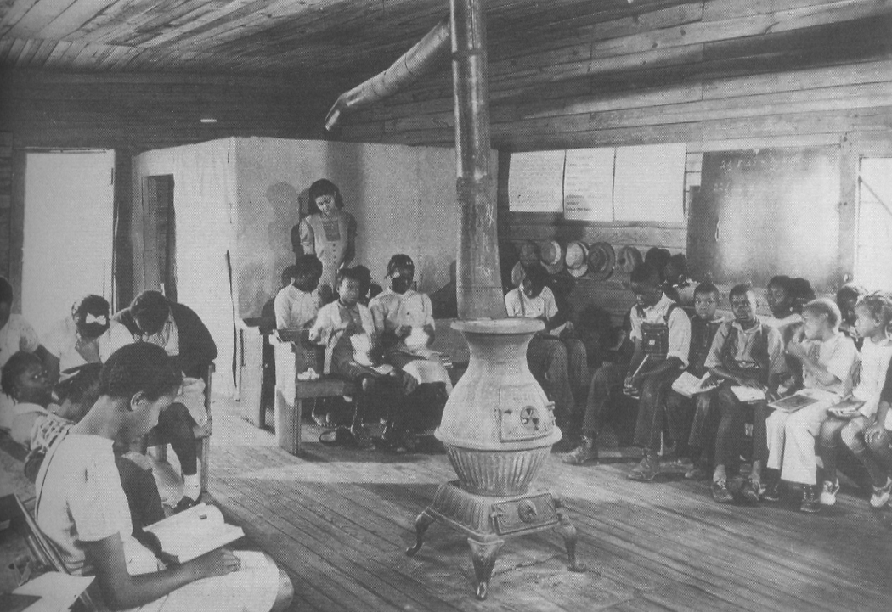
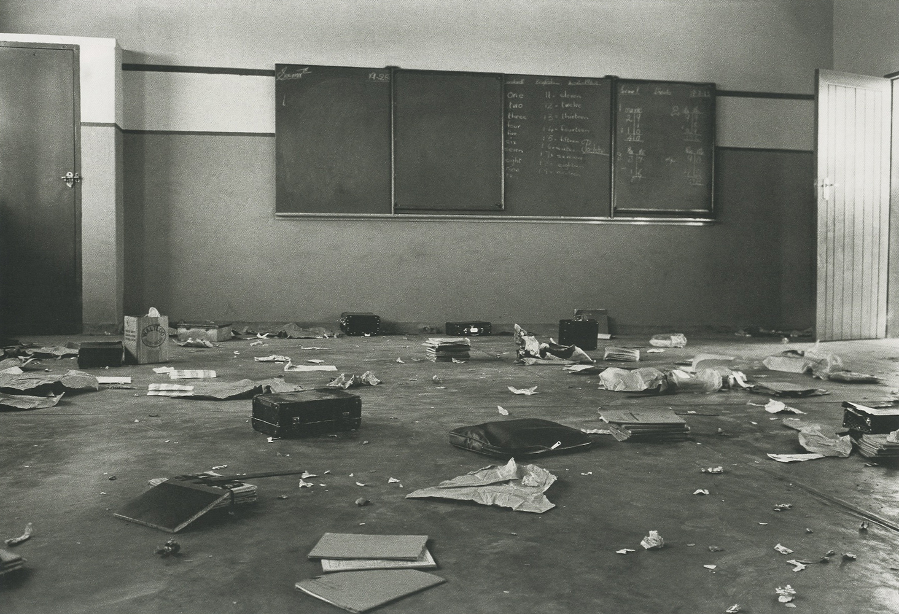

I wondered if “White” water tasted different from “Colored” water. I wanted to know if “White” water was white and if “Colored” water came in different colors.
[…] they were talking about throwing this “big nigger” into the creek. I got after them, saying, “Well you won’t be putting nobody in the water unless all of us go in together.”
[…] another time my brother said that he and one of his friends were somewhere and the white boys were throwing rocks at them. So they threw some rocks back, and they hit one of the boys and all the white boys left.
They soon came back with a man, maybe one of their fathers, and my brother said that the man came with his pistol and he asked the little white boy if my brother and his friend were the same ones who had thrown the rocks.
It wasn’t that the white children meant to be as cruel as they were, but they had been indoctrinated with that type of attitude by the adults around them.